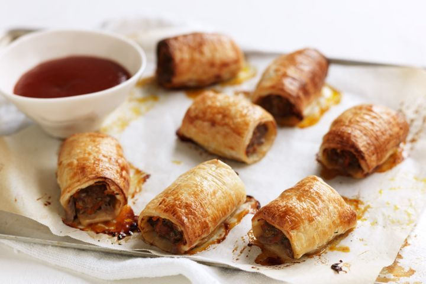

Sausage Rolls

Description
Best-ever homemade sausage rolls
- 4 sheets ready rolled puff pastry
- 1 tbsp milk
- 1 egg
- 500g veal mince, or beef mince
- 500g sausage mince
- 1 small brown onion, finely chopped
- 1 small red onion, finely chopped
- 1 medium carrot, coarsely grated
- 3 cloves garlic, crushed
- 1/4 cup finely chopped fresh flat-leaf parsley
- 1 1/2 tbsp tomato sauce
- 1/4 cup (60ml) worcestershire sauce
- Preheat oven to 220C/200C fan-forced. Line 2 large baking trays with baking paper.
- Thaw puff pastry . Meanwhile, combine milk and egg in a small jug. Whisk well. Combine veal mince , sausage mince , onion , carrot , garlic , parsley and sauces in a large bowl. Season with salt and pepper. Divide mixture into 8.
- Lay a sheet of pastry on a flat surface. Cut sheet in half horizontally. Spoon 1/8 of the mince mixture down along the long side of one pastry half, shaping mince into a long sausage shape. Brush opposite long edge with a little egg mixture
- Roll up pastry to enclose filling, finishing seam side down. Brush top of log with egg mixture. Cut into 6 short pieces. Place pieces, seam side down on prepared tray, 2cm apart. Repeat with remaining mince mixture, pastry and eggwash.
- Bake for 25-30 minutes or until golden and cooked through.